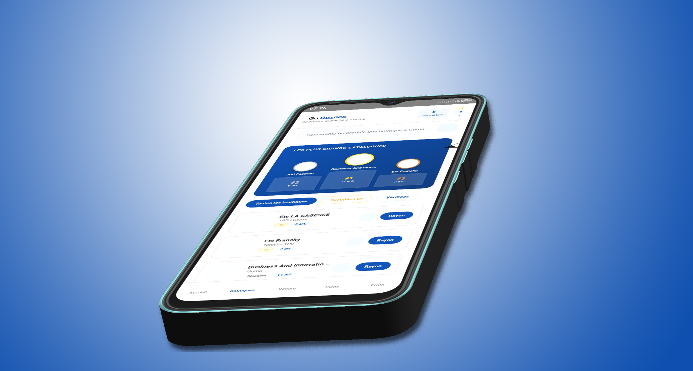

Vous êtes commerçant à Goma (Katindo, Birere ou Mugunga) vous vendez des pagnes, des articles éléctroniques ou des chaussire. L'idée de vende en ligne vous attire, mais une question vous bloque : "Et si on m'arnaque ?" c'est une crainte légitime. Dans un pays où la confiance numérique se construit pétit à pétit les histoires des faux acheteurs ou de paiement fictif font peur. Pourtant vendre sur internet n'est pas un risque si vous connaissez les bonnes pratiques. Avec Go Buznes, la prémière marketplace de l'Est de la RDC, nous avons conçu des outils pour proteger les vendeurs comme vous. voici comment vous mancer sans stress et sécuriser chaque transaction.
Pourquoi la peur des arnques freine les vendeurs congolais ?
En RDC, les echanges commerciaux reposent souvent sur la connaissancce directe. On achet chez son voisin où l'on voit la marchandise. Passer au digital change la donne. L'annonymat relatif d'internet peut attirer des personnes mal intentionnées. Les vendeurs débutants craignent notement les faux paiement, les chèques sans provision ou les 'brouteurs' qui promettent des commandes mirobolantes pour finalement disparaître sans payer. Cette méfiance est compéhensible, mais elle ne doit pas vous priver d'une opportunité en or : toucher des milliers de clients dans tout l'Est du pays.
Les 3 règles d'or pour vendre en ligne sans crainte
1. Vérifier toujours l'identité de l'acheteur
Avant de préparer une commande, prenez le temps d'échanger avec votre client. Un acheteur serieux répondre à vos question sur le produit et sa localisation. Méfiez-vous des clients qui veulent expédier les marchandise àm'etranger sans voir le produit. Un acheteur baséàBeni, Bukavu ou à Uvira vous donnera une adressse précise et des coordonnées vérifiable. La confiance se construit par le dialogue.
2. Privilégez les modes de paiement sécurisés
C'est la clé de voûte de votre sécurité. Evitez les virement sur des comptes personnels inconnus ou les paiement via des services non traçable. Sur notre plateform Go Buznes, nous encouragons les transactions intégré qui garantissent le paiement avant l'expédition. Si vous convenez d'un paiement à la livraison, assirez-vous de vous faire accompagne par un livreur fiable qui peut encaissé le montant en votre nom. Le Mobile Money (M-pesa, Orange Money, Artel Money) offre aussi des traces nulériques utilise en cas de litige.
3. Misez sur une livraison fiable et traçable
L'arnaque peu aussi veni d'un livreur qui disparait avec votre marchandise. Privilegiez des coursiers ou des sociétés de transport ayant pignon sur rue à Goma, Bukavu ou Butembo. Go Bunes peut vous mettre en rélation avec des partenaires logistiques qui assurent le suivi de vos colis. Un numéro de suivi (tracking) rassure à la fois le vendeur et l'acheteur. Gardez toujours un justificatif de dépôt et une preuve de récéption signée.
Comment Go Buznes protège ses vendeurs ?
Notre Marketplace nese contente pas demettre en rélation vendeurs et acheteurs. Nous avons intégré des fonctionalités de sécutité avancées. Nous respéctonsstrictement notre politique de confidentialité : Nous ne vendos jamais vos données personnelles. Les avis et évaluation sur les profils créent un système de réputation fiable. En cas de litige Notre équipe basée à Goma intervient pour jouer le rôle de médiateur tout en respectant nos conditions générales d'utilisationon.

Que faire si vous détectez une tentative d'arnaque
En se référant sur au document officiel Politique et Conditions de Signalement Signale-la immédiatement ! Contactez le support de Go Buznes via notre formulaire en ligne ou notre numéro whatsapp, fournissez les preuves des échanges. Notre équipe technique peutbloquer les comptes frauduleux.
N'interagissé jamais avec un acheteur qui vousdémande desinformations sensibles comme votre code PIN Mobile Money. Restez vigilant et n'hésité pas àconsulter notre blog pour des mises à jour sur les nouvelles méthodes de fraude.
Lancez-vous en toute confiance
Vendre en ligne en RDC est un levier de croissance puissant pour votre commerce. Ne laissez pas la peur des arnaques vous priver de cette opportinuté. En appliquant ces règles de bon sens et en utilisant les outils de Go Buznes, vous pouver vous concentrer sur l'ssentel : vendre vos produit et fidéliser vos client. Créez votre boutique dès aujourd'hui et réjoignez une communauté de vendeur qui réussissent. Votre succès est notre priorité